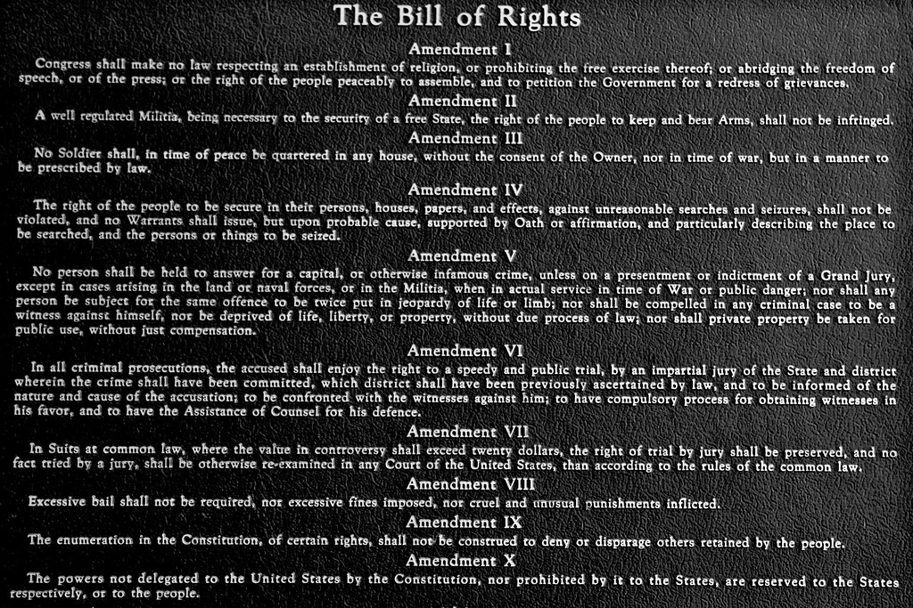

| Home | Quiz | SOURCES | |
The 9th Amendment to the Constitution was added during the first congress held by the United States along with nine other amendments that are collectively known as the Bill of Rights. Essentially, the 9th Amendment states that just because certain rights are enumerated in the Constitution, it does not imply that the Constitution does not protect those rights that aren’t enumerated. The Amendment itself doesn't guarantee any substantive rights. Rather, it is seen more as a rule of construction that helps provide a lens through which the other amendments found in the Bill of Rights can be read. Interestingly, since its ratification, the ninth amendment has never once constituted the main basis for any supreme court rulings. However, since this amendment is used primarily as a rule of construction, this fact is not surprising and in no way lessens the importance of this amendment.
In its original form, the Constitution did not contain a Bill of Rights. Since the federal government would (ideally) have limited and enumerated powers, many of the Framers saw no need to include a list of rights. In fact, many felt it could be a dangerous move since it could imply that the national government had more powers than those enumerated. It was also feared that the addition of a Bill of Rights could be misinterpreted to mean that certain rights were protected by the government while others weren’t.
“why, for instance, should it be said that the liberty of the press shall not be restricted, when no power is given [in the constitution] by which restrictions may be imposed?” -Alexander Hamilton
While the question of the addition of a Bill of Rights was hotly contested and downright opposed by many delegates at the Constitutional Convention, the sentiment was quite different in many state conventions. Generally, these state conventions were favorable to the idea of including a Bill of Rights, and many of them only ratified the Constitution with the understanding that a Bill of Rights would be added later on. Thus, during the First session of the United States Congress, twelve constitutional amendments were proposed. Ten of these passed. Amendments one through eight guaranteed the protection of substantive and specific rights. The ninth amendment was added to placate those who worried about the inherent dangers of having some specific rights listed and protected. Its purpose is and has been to ensure that the Bill of Rights can not be used to limit non enumerated rights. The ninth amendment has been evoked sparingly over the years. Prior to 1965 it only made limited legal appearances, most notably the Supreme Court case US Public Workers v Mitchell (1947). In more recent times, the amendment played a part in two major Supreme Court cases.
Although rarely used to argue cases before the supreme court, the Ninth Amendment to the Constitution is nonetheless essential to understanding the intention of the Bill of Rights and the Constitution as a whole. It ensures that readers understand that there are other rights not expilicity stated that are protected under the constitution. This quote by Supreme Court Justice Arthur Goldberg does an amazing job in showcasing the importance of the nineth amendment: “[The Amendment] shows a belief of the constitution’s authors that fundamental rights exist that are not expressly enumerated in the first eight amendments an intent that the list of rights included there not to be deemed exhaustive.”